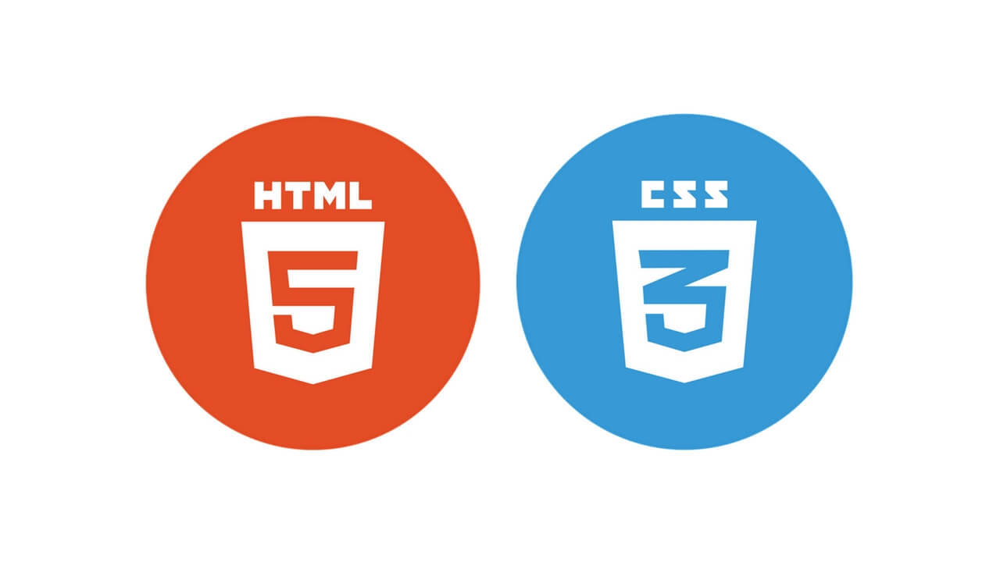

HTML não é uma linguagem de programação; é uma linguagem de marcação, usada para definir a estrutura do seu conteúdo. HTML consiste de uma série de elementos, que você usa para delimitar ou agrupar diferentes partes do conteúdo para que ele apareça ou atue de determinada maneira. As tags anexas podem transformar uma palavra ou imagem num hiperlink, pode colocar palavras em itálico, pode aumentar ou diminuir a fonte e assim por diante.
Fonte: mdn web docsAssim como o HTML, o CSS não é realmente uma linguagem de programação. Também não é uma linguagem de marcação — é uma linguagem de folhas de estilos. Isso significa que o CSS permite aplicar estilos seletivamente a elementos em documentos HTML.
Fonte: mdn web docs 